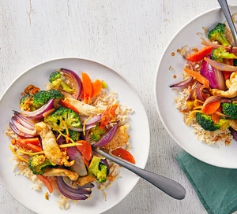

Odin Recipes
Healhy Chicken Stir-Fry Recipe

Description
Make this nutritious, veg-packed stir-fry when you need dinner fast –
and if you like a hit of spice, add some chilli to the rich peanut
dressing
Ingredients
- 65g brown basmati rice
- 2 tsp rapeseed oil
- 15g ginger, peeled and cut into thin matchsticks
- 2 small red onions (160g), cut into wedges
-
160g broccoli, broken into florets, stem finely chopped
-
2 carrots (160g), halved lengthways, then cut into diagonal
slices
- 1 red chilli, finely chopped (optional)
- 200g chicken breast, cut into thin strips
- ½ tsp ground cumin
- 1 tbsp crunchy peanut butter
- 1 tbsp wheat-free Tamari
Steps
-
Cook the rice following pack instructions, then drain. Heat the oil in a
non-stick wok over a high heat and fry the ginger and red onions for 2
mins. Add the broccoli stem, carrots and chilli, if using, and cook for
1 min.
-
Tip in the chicken and cumin, stir-fry briefly, then add the broccoli
florets and 3 tbsp water. Cover and leave to steam for 3-4 mins, or
until the broccoli florets are just tender and the chicken is cooked
through.
-
Meanwhile, mix the peanut butter with the tamari and vinegar. Stir the
sauce into the veg and chicken, then serve over the cooked rice.